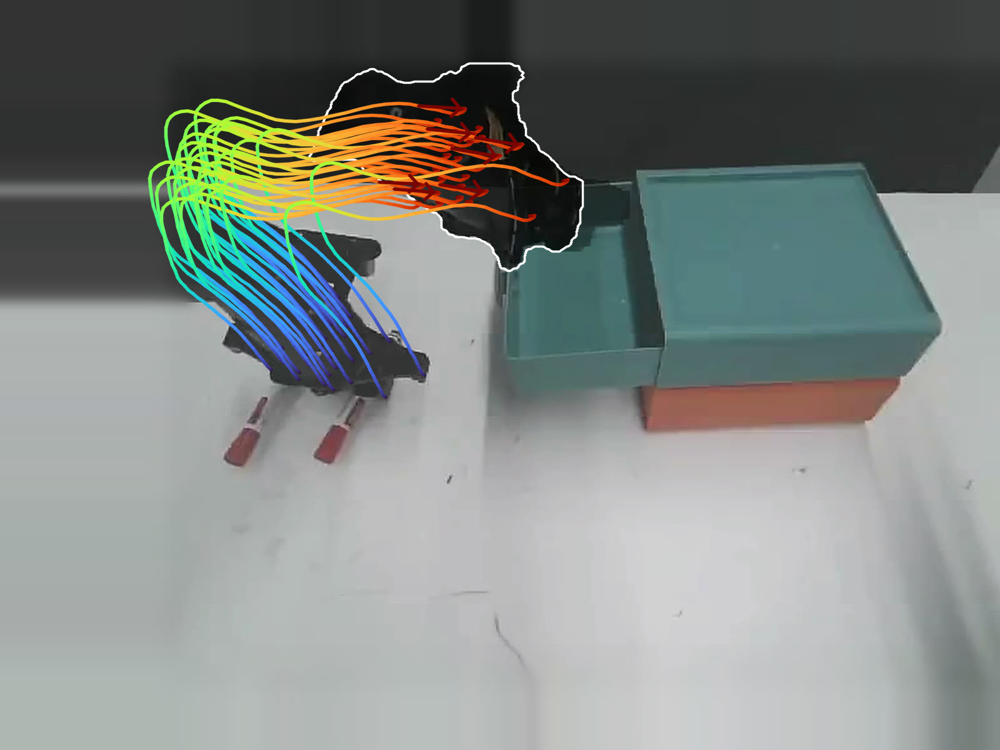
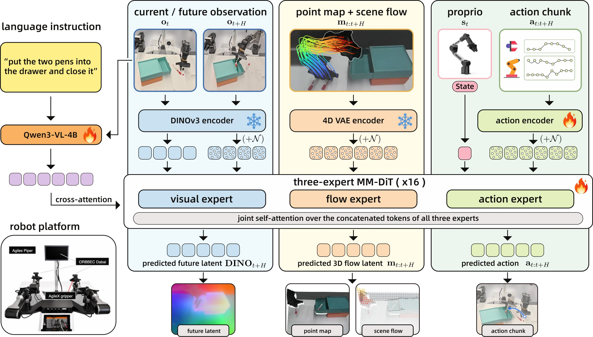
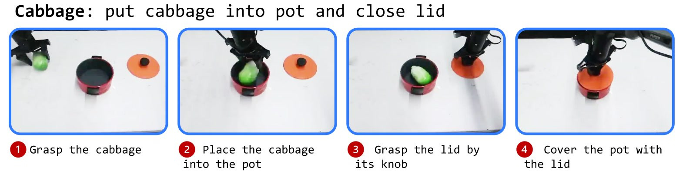
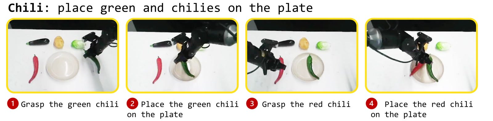
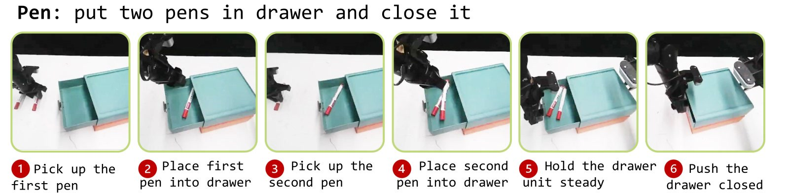
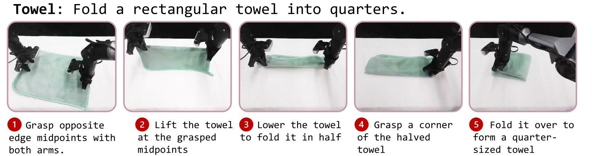
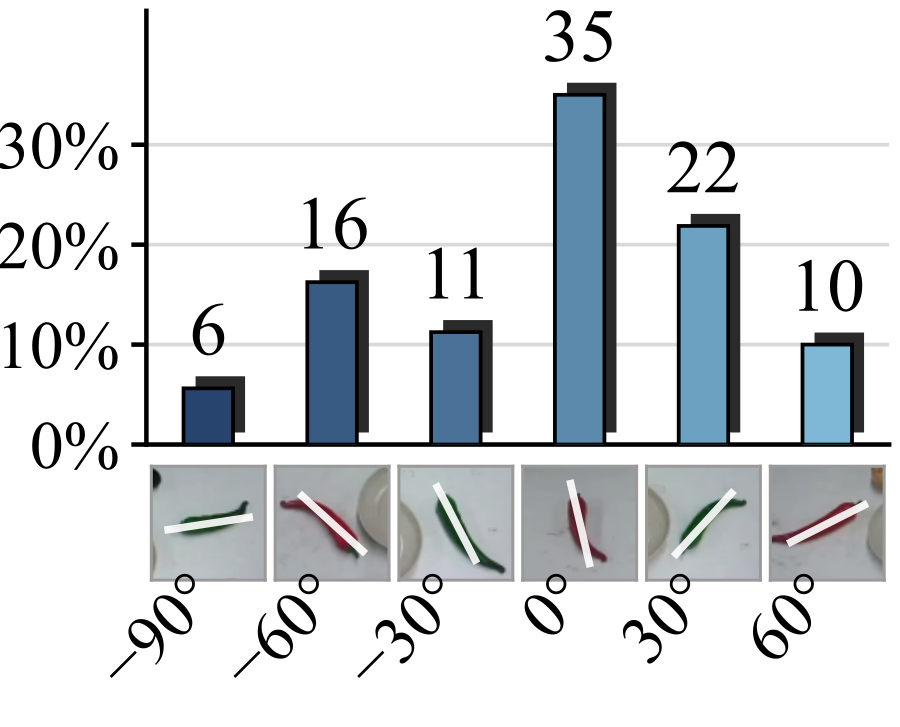
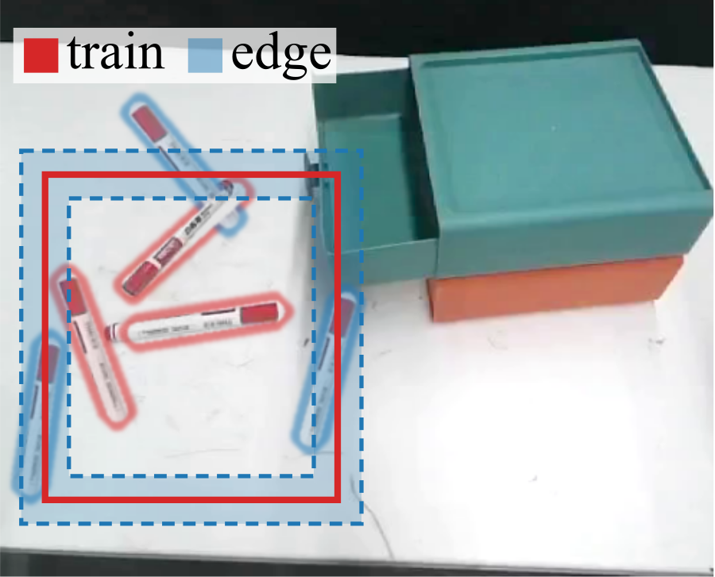

Actions say what the robot did. Flow shows how the scene moved.
Scene-level 3D flow tracks where every point of the scene goes in 3D. UniFlowWAM learns it as a third modality next to vision and action, yet deploys as a direct policy that needs no flow.
Read the abstract
Robot demonstrations record what the robot saw and what it did. They do not specify how the 3D world changed in between. Scene-level 3D flow describes this motion by tracking 3D scene points over time, providing the world representation with 4D geometry. Prior work has used flow to improve robot policies. Flow served as an intermediate prediction that a separate model converts into actions, as a prior injected at inference time, or as an extra output learned together with the action. In all of these designs, flow stays outside the policy, as a separate module or as an extra prediction head. No single model both predicts flow and conditions on it together with future images and actions.
We introduce UniFlowWAM, a Unified World–Action Model that makes 3D scene flow a third modality on par with vision and action. Its world representation therefore covers both future visual features and scene geometry, and flow receives its own supervision. UniFlowWAM is a diffusion transformer with one expert per modality, and the three experts exchange information through joint attention. We train UniFlowWAM under a ten-objective role grid, where each objective assigns every modality exactly one of three roles, namely target, condition, or absent.
We evaluate UniFlowWAM on RoboCasa-GR1, LIBERO, and LIBERO-Plus in simulation, and on four real-world bimanual manipulation tasks. On RoboCasa-GR1, UniFlowWAM raises the success rate of its base model without flow from 52.1% to 56.4%. It preserves in-distribution success on LIBERO at 98.1% and reaches 87.7% zero-shot on LIBERO-Plus. On the real robot, it achieves 87.0% average success, compared with 68.5% for the strongest baseline.

Three modalities. One diffusion transformer.
A diffusion transformer with one expert per modality; the three experts meet only in joint self-attention. The instruction and the current frame enter through Qwen3-VL-4B, which every expert reads by cross-attention.


Mid-trained on 214,443 episodes from ten embodiments, then post-trained per benchmark.
Ten objectives. What makes the model unified.
In each objective, every modality is either a target, a condition, or an absent placeholder. Each modality is a target in some objectives and a condition in others. Select an objective to see what it asks.
Scroll sideways to see all ten objectives.
Simulation. Gains where the base is weakest.
RoboCasa-GR1, 24 humanoid tabletop tasks
Success rate (%). The gain concentrates on the hard tasks: on the 10 tasks where released LDA-1B scores below 50%, UniFlowWAM improves all 10, by 6.5 points on average.
| Published results | SR |
|---|---|
| UWM | 14.2 |
| GR00T-N1.6 | 47.6 |
| StarVLA | 47.8 |
| Being-H0.7 | 49.2 |
| FLARE | 55.0 |
| LDA-1B | 55.4 |
| UniFlowWAM† | 58.9 |
| OpenWAM-α | 60.5 |
| Repeated evaluation, seeds 0–10 | Mean ± SD |
|---|---|
| LDA-1B, released | 52.11 ± 2.24 |
| LDA-1B, reproduced | 52.76 ± 1.16 |
| UniFlowWAM without mid-training | 54.84 ± 1.00 |
| UniFlowWAM with mid-training | 56.38 ± 1.47 |
†Best of seeds 0–10; published results are single evaluations. Bold is best and underline second best within each block.
LIBERO and zero-shot LIBERO-Plus
Success rate (%). Post-trained on LIBERO only, then evaluated on LIBERO-Plus without adaptation. The widest margin is under camera perturbations.
| Model | LIBERO | LIBERO-Plus | |||||||
|---|---|---|---|---|---|---|---|---|---|
| Cam. | Robot | Lang. | Light | Bg. | Noise | Layout | Total | ||
| OpenVLA-OFT | 97.1 | 56.4 | 31.9 | 79.5 | 88.7 | 93.3 | 75.8 | 74.2 | 69.6 |
| π0.5 | 96.9 | 72.2 | 76.8 | 85.1 | 96.2 | 95.5 | 87.0 | 86.9 | 84.7 |
| StarVLA-α | – | 48.7 | 63.4 | 86.8 | 95.8 | 94.6 | 75.0 | 80.2 | 77.8 |
| Fast-WAM | 97.6 | 40.0 | 65.3 | 68.8 | 91.4 | 58.2 | 63.8 | 75.5 | 65.3 |
| 4D-WAM | 98.6 | 45.2 | 64.3 | 90.6 | 94.3 | 57.7 | 69.1 | 79.2 | 71.0 |
| FLEX-π | 98.5 | 73.7 | 53.1 | 84.3 | 91.9 | 93.8 | 93.4 | 82.9 | 80.9 |
| OpenWAM-α | 99.3 | 33.8 | 76.1 | 88.0 | 97.0 | 87.1 | 39.8 | 77.5 | 69.2 |
| LaMP | 98.3 | 64.5 | 69.6 | 88.2 | 95.3 | 97.4 | 76.9 | 73.8 | 79.3 |
| Track4Action | 97.0 | 76.6 | 60.7 | 87.1 | 96.3 | 96.1 | 88.4 | 78.7 | 82.3 |
| LDA-1B | 92.8 | 33.1 | 71.2 | 76.0 | 89.9 | 91.1 | 72.0 | 66.2 | 69.5 |
| UniFlowWAM (ours) | 98.1 | 96.9 | 66.0 | 87.4 | 98.0 | 87.3 | 98.1 | 81.7 | 87.7 |
Bold is best and underline second best in each column. Leading methods score 97–99% on LIBERO, so it is reported only to verify that in-distribution success is preserved.
Four bimanual tasks. Strongest policy on every one.
An ALOHA-style platform with two 6-DoF arms. Four tasks that ask different things of the two arms; 50 demonstrations each, 50 trials per policy.
Success rate and process score
Success rate (%)Process score: share of milestones completed




Instructions and scored milestones of the four tasks.
Rollouts
Trained on one green towel. Folds what it has never seen.
Out-of-distribution test. All 50 towel demonstrations use one green towel, laid flat at varying positions across the table, long edge toward the robot, give or take a small rotation. We step outside that range in two directions: how the towel is placed, and the towel itself. Success is less frequent than in distribution, but the policy still completes the folds.
Placement
Vertical. The training towel turned 90°, short edge toward the robot, so the grasp points and the fold direction are new. Two episodes, both folded without human help.
A different towel
Flow objectives pay off where demonstrations are sparse.
Nested objective sets, everything else fixed. Every variant deploys as the same direct policy with no flow input.
Real-robot success rate (%) by objective set
On chili transfer, 4 of the 6 failures of policy-only training fall in the sideways 90° group. In that group, policy-only training succeeds in 20% of trials, while the full ten-objective grid succeeds in 80%.
The gap is rooted in the training data, which is not balanced: most chili grasps cluster near the lengthwise placement, and few pens start near the edge of their region. Therefore, the full ten-objective grid, with 3D flow as both a target and a condition, holds up better where demonstrations are sparse.


Cite
The arXiv identifier will be added when the paper is released.
@article{tian2026uniflowwam,
title = {UniFlowWAM: A Unified World--Action Model with Visual Semantics and 4D Geometry},
author = {Tian, Jialin and Li, Zhuofan and Wang, Xinkai and Lin, Bokai and
Wang, Chenyi and Zhan, Xinyu and Lu, Cewu and Yang, Lixin},
year = {2026}
}